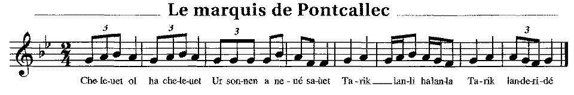

Ar markiz Pontkalek
Le Marquis de Pontcallec
The Marquess of Pontcallec
Texte recueilli par l'Abbé François Cadic
Publié dans "La Paroisse Bretonne" en mars 1907
Mélodie
"Ar markiz Pontkalek"
Source: "La Paroisse Bretonne", mars 1907
Arrangement Christian Souchon (c) 2012
|
BREZHONEG (Stumm KLT) AR MARKIZ PONTKALEK 1. Selaouit holl O selaouit Ur zonenn a-nevez savet. Tarik ha landi ha lanla Tarik landeridé 2. Savet war varkiz Pontkalek Chom ket n'e vaner da gousked [1] 3. Chom ket n'e vaner da gousked Gant an aoñ rak an dragoned. [2] 4. Ar c'hentañ 'n-doa eñ dizebret A oa ur paour o klask e voued. [3] 5. "Paourig, paourig, din e larit Men ema ar markiz kuzhet?: 6. Ha ma rit deomp-ni eñ kavoud, Ni a rey deoc'h -c'hwi pemp gwenek." 7. Na reoc'h ket din pemp gwenek Me rey-me deoc'h-c'hwi her c'havoud. 8. - Ema du-hont e bourc'h Lignol Oc'h evañ gwin ruz douzh an taol. 9. Ema du-hont e giz ur ran Un habit alaouret a-zindan." 10. Ar c'hentañ grogas en e sae Oa archer bras a Gemene. 11. "Boñjour deoc'h-c'hwi, Aotroù Markiz, Deuit-c'hwi ganeomp-ni da Bariz. 12. - Ha da Bariz me ne'z in ket Mar ne vin bet e Pontkalek. 13. Mar ne vin bet e Pontkalek O klask un habit alaouret. 14. O klask un habit alaouret Un hakene hag ekipet" 15. Pa oa o passañ pont Sant Vaodez Eñ a rae c'hoazh tarzh gant e foet 16. "Ha mard 'ean-me jamez d'ar vro Peorien Lignol he ouio." [4] 17. E Pariz, pa oa erruet, Tri deiz warlerc'h oa dibennet. 18. "Me yey da Bariz en tri deiz Na renkefe seizh marc'h bemde." [5] 19. E Paris pa oa erruet, Ar markiz he-doa goulennet. 20. "Mard'eo ar markiz e glaskit Deoc'h ket deuet-mat vit her c'havout: 21. Ema e benn war ar pave O c'hoariñ gant ar vugale." [6] Transcrit par Christian Souchon |
FRANCAIS LE MARQUIS DE PONTCALLEC 1. Bonnes gens, veuillez écouter Ce chant qu'on vient de composer. Tarik ha landi ha lanla Tarik landeridé 2. Sur Pontcallec, sur le marquis Qui ne dormait point au logis, [1] 3. Qui ne dormait point au logis Où les dragons l'auraient surpris. [2] 4. Il fut dénoncé je crois bien Par un pauvre mendiant son pain: [3] 5. "Mendiant, mendiant, si tu me dis Où se retranche le marquis, 6. Tu vois les cinq sous que voilà, Dis le-nous et ils sont à toi. 7. - Même si vous gardiez l'argent, Je vous le dirais tout autant: 8. Il prend son repas à Lignol, Bois du vin rouge dans un bol. 9. En grenouille il est déguisé, Mais l'habit dessous est doré." 10. Et qui donc osa l'arrêter? Le grand archer de Guéméné: 11. "Suivez-moi, Monsieur le Marquis: Nous allons nous rendre à Paris. 12. - A Paris, j'irai mais avec Un grand détour par Pontcallec." 13. Par Pontcallec, je dois passer Pour prendre mon habit doré. 14. Outre mon habit je prendrai: Un destrier bien équipé." 15. Passant le pont de Saint-Maudez On entendait son fouet claquer. 16. "Si je revenais au pays, Que les pauvres en soient instruits." [4] 17. Trois jours après son arrivée Sa tête avait été tranchée. 18. "A Paris en trois jours j'irai, Sept chevaux par jour creverai." [5] 19. Et la voilà donc à Paris Qui demande à voir le marquis. 20. "Si c'est le marquis qu'il vous faut Il vous falait venir plus tôt. 21. Car sa tête sert maintenant De ballon pour les jeux d'enfants." [6] Traduction Christian Souchon (c) 2013 |
ENGLISH MARQUIS PONTCALLEC 1. O listen all, O listen all! This song was newly composed. Tarik ha landi ha lanla Tarik landeridé 2. A song on Marquis Pontcallec Who shuned sleeping in his manor. [1] 3. Who shuned sleeping in his manor Lest the dragoons should capture him. [2] 4. The first man who denounced him He was a man begging for food. [3] 5. "Poor man, tell me, poor man, tell me Do you know where the marquis hides? 6. If you make us discover him, We shall give you these five pence here." 7. Even if you'd keep your five pence For sure I would help you find him. 8. He is in yonder town Lignol Having lunch and drinking red wine. 9. His clothes make him look like a frog. Underneath they're braided of gold." 10. The first man who dared seize his coat Was Guéméné's Chief Constable. 11. "Good day to you, my Lord Marquis, Will you follow me to Paris. 12. - I won't follow you to Paris Before I was in Pontcallec. 13. Before I was in Pontcallec Allowed to don my gold-braided coat. 14. Allowed to don my gold-braided coat And to ride my well-harnessed dun." 15. He rode over Saint-Maudez bridge And he cracked his whip loudly. 16. "If ever I am to come back, The Lignol poor must know I left." [4] 17. Now he arrived in Paris. Three days later was beheaded. 18. "I'll ride to Paris in three days Each day, to death seven horses ." [5] 19. Now she too is in Paris And she asked for the Marquis. 20. "If it is the Marquis you want You are not welcome to find him: 21. His head rolls about the pavement As a playball for the children." [6] |
NOTES:
|
[1] Outre le château de Pontcallec près du Faouet, ceux de Lambilly près de Ploërmel et du Pouldu furent les lieux de rendez-vous des conjurés de la conspiration de Cellamare. Des débarquements d'armes eurent lieu à l'embouchure de la Vilaine ainsi que quelques rassemblements à Guérande. [2] Les dragons de Montesquiou, le lieutenant du roi dans la province arrêtèrent les principaux meneurs: du Couëdic, Talhouët, Montlouis et Pontcallec originaires de Priziac, Saint-Tugdual et de Berné, au pays de Guéméné et du Faouët. [3] Toutes les versions de ce chant s'accordent pour dire que ce fut un mendiant qui finit par révéler la retraite de Pontcallec chez le recteur de Lignol. [4] Cette version fait de Pontcallec l'ami des pauvres. L'Abbé François Cadic cite dans ses commentaires son homonyme, l'Abbé J.M.Cadic, vicaire à Bieuzy, qui, dans la "Revue Morbihannaise" et en mars 1892, publia une version en dialecte de Vannes recueillie aux environs d'Auray. Le caractère de son héros doit rappeler le libertin de la gwerz Le clerc Le Chiffrans, car on y trouve ce dialogue entre les dragons et le marquis:
[5] L'Abbé François Cadic semble croire qu'une dame était effectivement intervenue en faveur du condamné, sa soeur ou sa fiancée. On peut tout aussi bien supposer qu'il s'agit d'une erreur du chanteur qui a confondu avec un autre chant, Le page de Louis XIII ou La Fontenelle. [6] La brièveté de ce chant vannetais, comparé aux 79 distiques de celui du Barzhaz conduit l'Abbé Cadic à suggérer que La Villemarqué y a donné "une de ces chansons où le collectionneur a peut-être trop suppléé au défaut de mémoire du chanteur". |
[1] Along with the manor of Pontcallec near Le Faouet, the manors of Lambilly-near-Ploërmel and of Le Pouldu were the chief meeting places for the conjurators engaged in the "Cellamare plot". Arms were landed at the mouth of the Vilaine and some meetings took place in Guérande. [2] The dragoons, commanded by Montesquiou, who was the King's lieutenant in Brittany arrested the main leaders: du Couëdic, Talhouët, Montlouis and Pontcallec, who were native dwellers of Priziac, Saint-Tugdual and Berné, in the surroundings of Guéméné and Le Faouët. [3] All versions of this song agree to state that it was a beggar who at last disclosed Pontcallec's hiding place at the vicar of Lignol's. [4] The present version makes of Pontcallec a friend of the poor. The Reverend François Cadic quotes in his comments his namesake, the Reverend J.M.Cadic, curate at Bieuzy, who, in "Revue Morbihannaise" published, in March 1892, a Vannes dialect version gathered in the Auray area. The protagonist's character must resemble that of the libertine in the gwerz Clerk Le Chiffrans, judging by this dialogue between the dragoons and the marquess:
[5] Abbé François Cadic apparently believes that a lady really intervened in behalf of the prisoner, his sister or his fiancée. But it is also plausible that the singer committed here a mistake and quoted verses from another song: The page of Louis XIII or La Fontenelle. [6] The short size of this Vannes dialect song, in comparison with the 79 verses of the Barzhaz song prompted the Reverend Cadic to surmise that La Villemarqué her gave "one of these songs in which the collector made up too freely for the singer's lapses of memory". |
Retour à "Markiz Pontkalek er Barzhaz Breizh"
Table